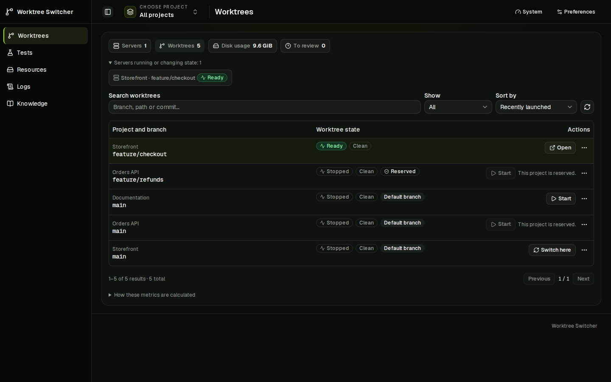
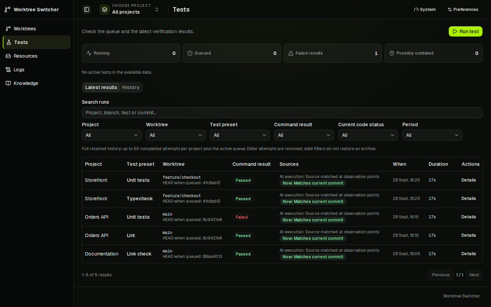

I started with a small Codex plan. Now I run a Linux development worker with several coding clients, automated PR reviews, and a controller I built to keep the whole thing manageable. I'm still not entirely sure when that became the project.
It started with the boring code
At first, I gave Codex small, isolated tasks. Write this function. Implement that class. Write some tests. Fix it. Just... get the boilerplate out of the way. It saved time, and I could check the result without losing track of what was happening.
As the models improved, I started handing over larger pieces of work. "Implement this feature" became a reasonable request. There was more work I could delegate, but session limits made me wonder how much of my subscription I was leaving unused.
Could an agent keep working while I slept? Could it pick the next task from a backlog? Where would it leave enough context for the next session to continue?
This was starting to feel like working with a team of developers. Which it wasn't. I was also figuring out how the team was supposed to work. Somewhere along the way, I started acting like a manager who loved micromanaging. Which I don't. I swear.
Then I added another subscription
A friend told me, "Bro, try Claude."
I already had things to sort out with Codex alone. Naturally, I added another tool.
I found T3 Code, which gave me a place to manage sessions across coding clients. That helped, but I still needed a shared backlog. So I tried keeping JSON and Markdown files in the Git repository, where all the agents could read them. Simple enough. Until branches and worktrees gave everyone their own version of the backlog. Keeping those in sync got awkward. A decision made in one conversation had to be available in another. I wanted to discuss an idea, a backlog item, a bit of project memory, whatever, with one agent and let another pick it up without copying half a chat into its prompt.
Changing the model was easy compared with keeping the project context together.
Five threads still share one machine
Then there was the hardware.
Five threads at once. Four dev servers. Two end-to-end test runs. All on the same worker. Each agent had a reason to start its own process, but the machine had to run all of them.
My Linux worker has six CPUs available and about 18 GiB of RAM. I wanted to use that machine better before spending money on a bigger one. Could I get a bigger machine? Yeah! Did I want to pay for it? Nah...
Memory limits can help contain resource use. They don't decide whose dev server should be running, whether another test should wait, or whether I'm currently checking the branch an agent wants to switch away from.
Back when I was studying, a long time ago, someone taught me about semaphores. Apparently, sharing limited resources was already a thing before coding agents came along. Who knew :-) That idea came back to me when several agents wanted to use the same machine at once. So I built Worktree Control.
One port, a reservation, and a queue
The starting point was simple. I set a limit on how many managed dev servers can run on my machine at once. Each project gets one server on a stable port, and agents can switch it between worktrees. They claim the project before using it and release the claim when they're done. I decide how many servers the machine gets to run!
I, as the most important AGENT on all my projects ;-), can lock a project through the dashboard while I'm checking something in the browser. The next agent has to respect that reservation. Releasing a claim leaves the server running, so a free reservation doesn't necessarily mean a free server slot.

Builds and tests go through a separate queue, with a limit on concurrent runs and at most one active check per worktree. Submitting a test doesn't switch the dev server. A browser test that needs that server still needs a claim. If another agent holds it, that test has to wait; starting a stopped server also needs room under the server limit.
That distinction matters in my projects. In one of them, for example, shared test fixtures must be prepared inside the queued job. Resetting the database before entering the queue could interfere with a test that's already running.
The controller also shows resource use and worktree disk usage. Those .next directories add up. It can clear a stopped, unlocked worktree's Next.js cache after confirmation.
These rules work when agents use the controller. It can't stop an unrelated terminal from launching another server, so the workflow also lives in the project's agent instructions.
Did it actually check the code?
"Tests passed" sounds reassuring. I still want to know what was tested.
Which worktree? Which command? Was the code changed after the test entered the queue? Is the result still relevant to what I'm looking at now?
Worktree Control records Git observations around a run and keeps the command outcome separate from the evidence about its source. A successful command doesn't automatically mean the current revision has been verified. The result records the commit, whether the worktree was dirty, and a digest of the Git status entries for changed paths, taken before and after the run, so a HEAD change between those observations gets flagged.
There are limits to this. Local checks use the files in the worktree, including uncommitted changes. They aren't immutable snapshots, and Git observations don't capture every environmental dependency. But they give me something more useful to inspect than a claim in a chat.

The next session needs somewhere to start
Once the server and test queue were under control, I still needed somewhere to keep the work itself.
I added Knowledge to Worktree Control. It holds the backlog, discussions, and project memory. Tasks can link to the discussion that led to them. Decisions can retain their sources and revision history. Saving a memory entry and approving it are separate actions.
I can read and edit those records in the dashboard. Agents can access them through MCP or the CLI. That gives different sessions a common place to look, even when I change coding clients.
For a handoff, a task's next-session context collects linked memory and source revisions. The next agent still has to read and understand them, but the information has somewhere to live.
What I'm running today
The setup is one Linux development worker with Codex, Claude Code, and OpenCode, plus T3 Code for remote access to coding sessions. n8n handles my PR review automation. Worktree Control manages development servers, queues checks, and holds shared project context.
Worktree Control currently has five registered runtime projects on that machine. I also use it to organize work on Worktree Control itself.
The controller runs as one Node.js process with SQLite and a browser dashboard. The Next.js UI is exported as static files, so it doesn't need another resident Next.js server.
It's still pre-1.0, and the setup keeps changing. Running the controller on my Linux worker is what I use today. Dispatching verification to separately connected workers is still in development.
I'm still figuring out how much to delegate
I started by trying to get more use out of my subscriptions. That led to a surprising amount of work on queues, reservations, and records that survive a chat session.
I still have to choose what matters, review changes, and decide whether the result is good enough. Keeping every agent busy is easy to mistake for progress. I want to be able to come back to a task and see what changed, what was checked, and what still needs my attention.
Worktree Control is open source on GitHub. If you're running several coding agents on one machine, I'm curious how you handle the same problems. Where do they leave context, and who gets to use the dev server?
- Project website: https://pioootrek.github.io/worktree-control/
- Source: https://github.com/pioootrek/worktree-control